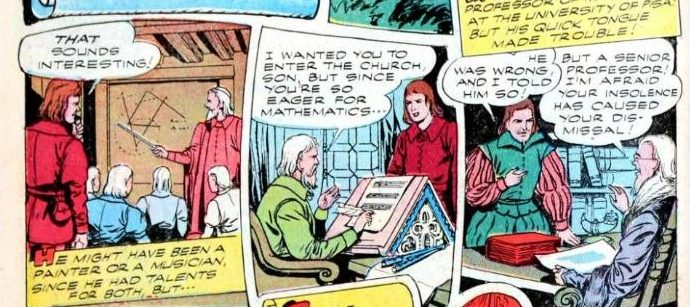

How it works: read the comic pages → answer the question about today's big idea → see what the comic got right and wrong → write 1–2 sentences. Done = all parts green, then turn in at the bottom.
Word help (tap to open)
- Scientific Revolution = when people began testing ideas about nature with evidence and experiments
- Telescope = a tube with lenses that makes faraway things look close
- Inquisition = a Church court that tried people accused of going against Church teaching
- Retract = take back something you said
- Blasphemy = disrespecting God or holy things
- 1943 comic = made for American kids in the 1940s. It uses some old words and shows one point of view.

Click the page to make it bigger.
Turn in your work
Your work saves on this device, so you can come back later. Your teacher sees it after you turn it in.
Comic: Real Life Comics no. 14 (1943), Nedor Publishing, a true-history comic of the 1940s. Public domain. Page images from Comic Book Plus (comicbookplus.com). Cropped to today's reading.